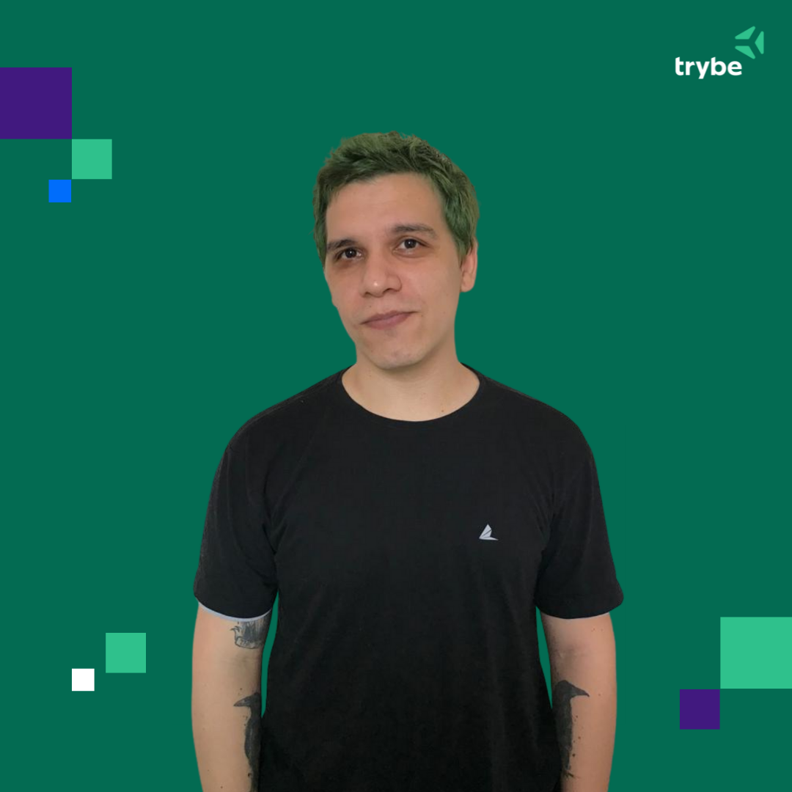

Bruno de Oliveira Pinheiro Júnior
Olá! Tudo bem?
Me chamo Bruno, moro em Recife, Pernambuco, no Nordeste do Brasil.
Sou formado em Arqueologia pela Universidade Federal de Pernambuco, e recentemente comecei a jornada para me tornar um Desenvolvidor Web pela Trybe!
Sou Dungeon Master de Dungeons & Dragons há mais de 4 anos, e pretendo juntar essas 3 coisas em um projeto no futuro!
Como pessoa estudante de Desenvolvimento Web pela Trybe, começamos aprendendo a utilização de Sistemas Operacionais baseados em Unix, como iOS e Ubuntu.
Além disso, buscamos um desenvolvimento constante dessa habilidade, incluindo a utilização diária do terminal em nossas operações e exercícios.
Como parte dos conhecimentos desenvolvidos no dia a dia na Trybe, aprendemos e nos familiarizamos com o fluxo constante de comandos e operações necessários para a utilização de um repositório Git, e da manutenção desse repositório de forma remota, na plataforma GitHub.
Ainda somos incentivados a manter um Repositório de Exercícios hospedado no próprio GitHub!
Parte das Soft Skills recomendadas e desenvolvidas de forma diária na Trybe!
Como Dungeon Master desenvolvo de forma constante essa habilidade, tanto no preparo, quanto durante as sessões de jogo!
Mais uma Soft Skill de grande importancia para uma pessoa desenvolvedora!
Como parte da experiência tanto como Dungeon Master, como durante a formação em Arqueologia, é parte indispensável em ambas as atividades.
Uma versátil e prática linguágem de programação. Dei meus primeiros passos no aprendizado constante dessa habilidade ainda antes de começar os estudos na Trybe.
Aproveitando a oportunidade de um curso através da plataforma Coursera, completei o curso de Introduction to Python Programming pela University of Pennsylvania.